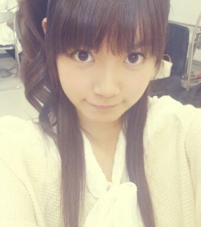
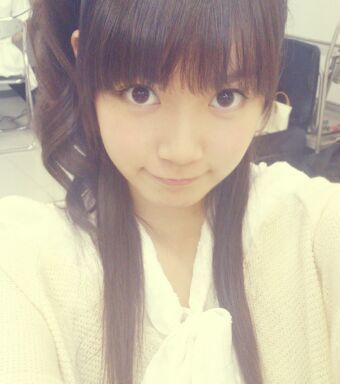
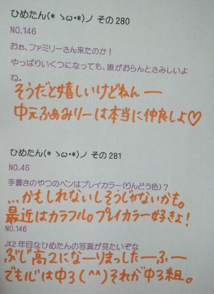

| 2013/07 06 Sat | ひめたん大図鑑53(2012年4 月) |
どーんー眠いよー
今日は通常盤「人間という楽器」！
楽しい曲になったと思∩^ω^∩
乃木うた的な感じで
みんなで仲良く楽しく
大切にしていきたい楽曲ですねー
曲中でウシさんの声まねしたよー
「モー」ってゆったよー
それウシじゃなくてひめたんじゃん！
と言われたけど(´・ω・｀)頑張ったよー
こちらはサンバちっくな感じっ
今回はいろんなメロディがあるねっ

まあや姫(〃ω〃)
チーム広島いえあっ
あっそうそう！
明日は名古屋全握ですねー
行くぜーって方は
一緒に楽しもうねーよろしくです♪
らりんブログにもあったけど
らりんひめたんでMCしますよー初だよー！
らりん頑張ろうね( ^ω^ )よろしくねっ

ひめたん大図鑑とは何か。それは、いわゆる
「過去の質問返しをまとめたもの」って
感じかな。
過去なので時制とかおかしなことになる質問も
中にはあるかもだけど、
ま、そゆことなんでねー
今日は通常盤「人間という楽器」！
楽しい曲になったと思∩^ω^∩
乃木うた的な感じで
みんなで仲良く楽しく
大切にしていきたい楽曲ですねー
曲中でウシさんの声まねしたよー
「モー」ってゆったよー
それウシじゃなくてひめたんじゃん！
と言われたけど(´・ω・｀)頑張ったよー
こちらはサンバちっくな感じっ
今回はいろんなメロディがあるねっ
まあや姫(〃ω〃)
チーム広島いえあっ
あっそうそう！
明日は名古屋全握ですねー
行くぜーって方は
一緒に楽しもうねーよろしくです♪
らりんブログにもあったけど
らりんひめたんでMCしますよー初だよー！
らりん頑張ろうね( ^ω^ )よろしくねっ

ひめたん大図鑑とは何か。それは、いわゆる
「過去の質問返しをまとめたもの」って
感じかな。
過去なので時制とかおかしなことになる質問も
中にはあるかもだけど、
ま、そゆことなんでねー

1089
 まだ1回もイベント参加できてないけど、ひめきゅん続けてもいい?
まだ1回もイベント参加できてないけど、ひめきゅん続けてもいい?
1090
東京くらいしか握手行けないけどいい?←
1091
ワシみたいなじいさんが握手会に来ても嬉しいですか?
1092
2ndから、ひめたんのところ行っても許してくれる?
1093
根っからのDD体質です。こんな俺でもひめたんのブログに今後もコメントしていいかな?
1094
複数推しだけど、2推しでもいい?
こゆ質問、たくさんの方からいただきます。
許可なんかいらないよー(>_<)ひめたんは応援してくれるだけで嬉しいのよー!
いつもありがとうございます。大好きよ(*^^*)
1095
東京での暮らしはもう慣れたカナ?
1096
東京に引っ越して周りの環境に慣れてきたかな?
1097
東京の暮らしなはなれましたかな!?まだ早いか(笑)
1098
上京してみてどうですかぁ?
1099
都民生活はどうですかー??
慣れてきましたよ(*^^*)
気付けば1ヶ月たってた。新しいとこ来たら、それだけ新しい出会いとか
新しい発見とかあって、ひめたんの脳はもんのすごい勢いで刺激されてるの!
1100
東京での生活どんな感じ☆?
楽しいっ!
東京生活も楽しいし、高校生活も楽しいから「東京高校生活」なんて組み合わせ最高に楽しい(o>ω<o)!
1101
ホームシックになったらいつでも広島弁でコメントするけえ、ゆうてね!
ああ嬉しい(*^^*)
広島人はじゃんじゃん広島弁でコメントして下さーい♪
これでひめたん寂しくなくなるね☆
1102
東京の地下鉄は複雑で分かりづらいけど、ひめたんは慣れたカナ?
地下鉄もばっちしですよー♪
とかゆーて、この前友達と2人して乗る電車間違えて迷子んなった('・ω・`)まだまだやんな。
1103
東京に出てみて通じなかった言葉や標準語やと思ってた言葉ってあるー?
1104
メンバーに伝わらなかった方言ってある???
「はぶてる」...拗ねるって意味なんだけどね。
漢字あると思って変換しようとも試みたけど、方言なんだね('・・`)
1105
埼玉県といったら思い浮べるもの、イメージは、何でしょうか?
ゆみ姉(岩瀬佑美子chan)さゆにゃん(井上小百合chan)るんるん(斎藤ちはるchan)かなりん(中田花奈chan)は埼玉出身だったよね♪
でも名物とか全然わからんっ。何ー誰か教えてー?るんるーん???
1106
ひめたんにお願い&アドバイス。...(中略)だから「かわいい!」っていわれたら「ありがと!!」て言ってくれると嬉しいんだけど...
全部読みました。ありがとうございます(*^^*)
これからは素直にみなさんの意見を聞き入れて頷けるように頑張るね!
1107
なんでそんな可愛いんだい?好きな言葉がちくわ一会だから?('・ω・`)
はいありがとうございます(^ω^)
さっそく。アドバイス通りにしてみたよ。んんん。
1108
ひめたんは絶叫大丈夫な人だっけ?
1109
ひめたんホラーとかいける?
1110
絶叫系の乗り物って、好きですか?
ホラーも絶叫も好きっ(o>ω<o)
かもんかもん。一緒に行こーう!!!
1111
ディズニーランドは行ったことありますか?
ありますよー♪
シーは幼かったから記憶がない('・ω・`)ランドは行ったの去年だもん!

(＊´・ω・＊)
コメント(127)
2013/07/06 22:06